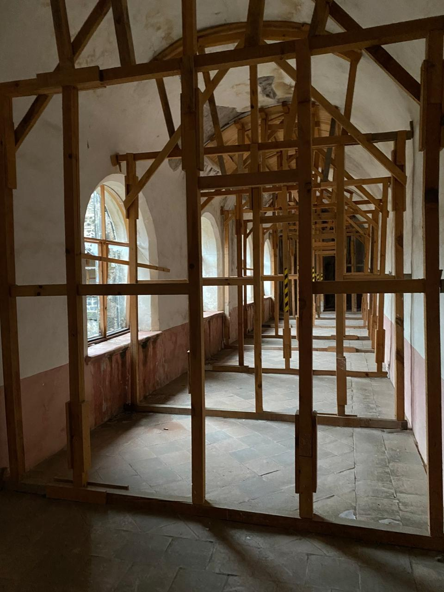

El claustro alto
Silencio y recogimiento
Al subir a la planta alta, el claustro adquiere un carácter más silencioso y reservado. Si el claustro bajo concentraba buena parte de la vida comunitaria, este nivel conducía hacia los espacios destinados al descanso, el estudio y la vida más íntima de los frailes.
Desde sus corredores, los religiosos podían recorrer el convento conservando el ambiente de silencio y recogimiento propio de la vida dominicana. La arquitectura misma ayudaba a separar progresivamente el bullicio exterior de los espacios dedicados a la oración y la contemplación.
El claustro después del sismo

El claustro alto durante los trabajos de restauración posteriores al sismo de 2017.
La narración intentará comenzar automáticamente. Si Safari la bloquea, pulsa el botón.